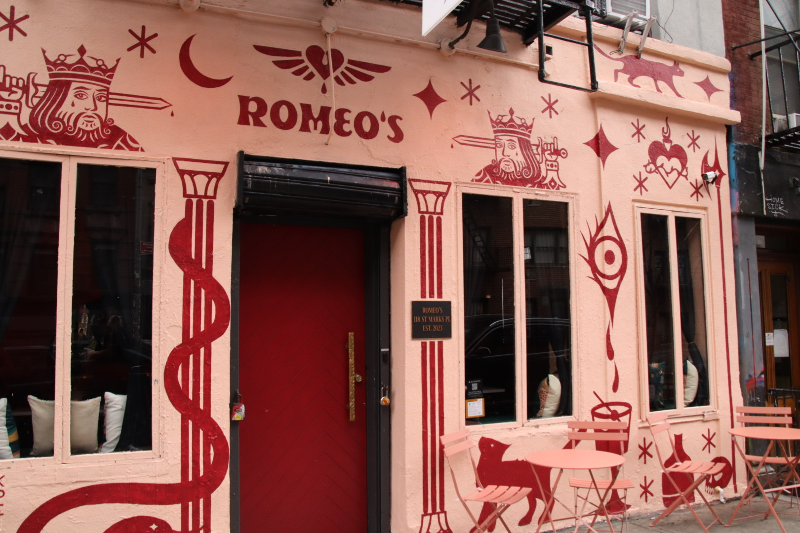
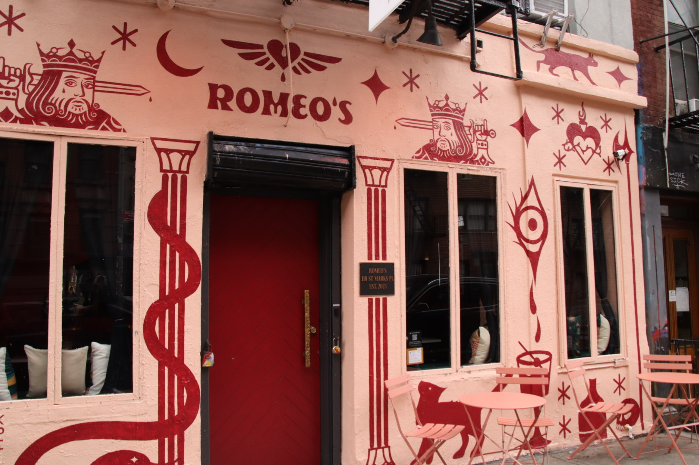

I. The Space
On August 6th, 1988, the New York City Police Department incited (New York Times Editorial Board) a riot at Tompkins Square Park in Manhattan’s East Village against groups of “drug pushers, homeless people, and young people known as squatter and punks” protesting a park curfew and gentrification (Perez-Rivas).
One block west of that site today, at Ladybird, “a vegetable bar” you can, according to their website: “Eat, Drink, Start a Revolution.” There, a 12 ounce beer goes for $10, a cocktail for $15 to $18, a single dumpling-sized bun for $8, the cheapest dessert – the “Brûlée” for $15 (“Ladybird”). North one block is St Mark’s place, where bars at a similar price-point are interspersed with pop-up peddlers’ stands selling vinyl at as low as $2 an album to the sharp haggler; where upscale teas from around the world can be purchased at Physical Graffitea: a cafe with a floral, wooded, low-lit aesthetic. Nearby, a shop exclusively selling small servings of Hong Kongese mango desserts in artisanal ceramics could be placed in frame with facade decorated by a mass of the disembodied remains of baby dolls and graffiti art reading slogans like “EAT COCK FUCK COPS.” Just east of all of this is Tompkins Square Park. Today, Elm trees rise above a playground teeming with the laughter of young children and a dog area with a zen garden-like crushed stone ground, and several green lawns. Occasional punk shows are held there; the audiences tend to be in their forties or older. While some of the businesses farther east echo the aesthetic inclinations of their counterparts west of Tompkins, the area (known as Alphabet City, since the Avenues are named with letters rather than New York's usual numbered names) is more residential. Charming brownstones (a cursory sort by price search on Zillow reveals the cheapest of studios go for $2,100 per month) are interspersed with relics of the neighborhood’s Puerto Rican (or, Nuyorican) heritage: little community gardens with Spanish names (like Pancho Ramos and La Plaza) pepper the blocks around Avenue B and Avenue C, harboring flora from weeping willows to roses to squash. Avenue C is also known as Loisaida avenue, a Spanglish reimagination of “Lower East Side"1 coined by Bittman “Bimbo” Rivas in a 1974 poem (McCarthy; Rivas). The neighborhood’s vibrant city-sanctioned mural art commemorates community leaders of the ‘70s through the ‘90s. Walking through the East Village in 2024, though, the paint on the walls that strikes me the most is a motif in the graffiti: plain, unstyled text that reads “My keys don’t fit these locks No More.”
In the ‘80s, the East Village was a very different place: in the words of Tony Magia – founder of The Other Paper, a twice-monthly hyperlocal paper on news east of Broadway and South of 14th Street – the East Village was a place of:
abandoned tenements, drug raids and overdoses, the homeless on the Bowery, social change without social media, the myriad of faces you would see on the sidewalks and inside the dark dens of the Mudd Club, Danceteria, Max’s Kansas City, and CBGBs… The East Village was always a place where struggling artists could find compatriots and affordable rents. Starting with the beatniks, then the hippies and when I was there the punkers. (Carlson et al.)
Leading up to this, New York’s turn towards finance and real estate led to a loss of the industrial jobs that sustained the working class livelihoods of the LES. After all the strain from a century of continuous use, the neighborhood’s tenements fell into disrepair by the ‘70s, making them unprofitable for landlords who stopped making repairs, stopped paying for heat and water, and eventually abandoned their buildings or even burnt them down for the insurance money (Starecheski, Squatters: Property 63). Tompkins was the center of the fallout of all of this: “ravaged by the twin plagues of crack and AIDS…Tompkins…became an ad-hoc camp for homeless people, squatters, punks, drug dealers, and users” (Rosen). Magia, as a student and a journalist, had a particular sort of relationship with the area: “The gritty neighborhood and the crime were all great sources for an idealistic photojournalist to hone his muckraking skills. I didn’t notice squalor as much because I was part of it and saw it through a camera lense” (Carlson et al).
When asked about what he missed about the neighborhood, Magia mentioned “this one after hours place called Club Zero. It was a guy’s living room with a plywood bar serving only Jack Daniels and cans of bud” (Carlos et al). Magia’s narrative of the East Village is one of dilapidated urban space, but it is also one of people searching for and (not only finding, but) making the spaces they desire. Magia and the owner of Club Zero both had desires – namely, to journalistically portray the teeming urban life of the East Village and to have a homely bar – but they both actualized them by creating their own space (and therefore community) to that end.
When done by immigrants, poor people, drug users, and political radicals, though, the transformation of urban space to one's ends is often not sanctioned by the state. To the people of the East Village, Tompkins Square Park was a garden where one could cultivate, a bazaar where one could buy and sell, a home and town where one could live, a community center where one could discuss, a concert hall where one could play, sing, dance, listen, and enjoy. To the state and those who aligned themselves with its authority, it was public property on which such disorderly activity was criminal. Thus, a fundamental contest arose: between the communities built around the act of using and transforming urban space to their end, whose life was defined by this labor, and a political authority whose systems of rights and property could only apprehend that labor as criminal. What were the narratives on the side of power that defined the contest for this space? What can we extrapolate about systems of power from them? And, on a more human level – though perhaps I indulge in a romantic notion to say that everyday life speaks more to humanity than (human) systems of power – what were the subaltern narratives2 around how life was lived in this space?


 



^ the vibes on st marks place, 2024


^ the vibes at tompkins in the late '80s and early '90s


^ the vibes at tompkins in 2024
^ the vibes in loisaida in the '70s
^ the vibes in loisaida, 2024
II. The Narratives of Power
In one of the bolder moves of this contest, the City removed 150 homeless from the park – which was resisted with protest – and closed it down for renovations (Nieves, B1). Subaltern labor on urban space, in the end, prompted a state act of counter‑labor to undo it. The New York Times’ coverage of the matter on July 17, 1991 was a journalistic effort at characterizing the nature of tensions at Tompkins. It was an attempt to weigh perspectives of those in the neighborhood: nearby business owners, residents, homeless people living in the park, squatters in nearby “vacants”, and anarchists. While the start of the article covers the basic facts of the events and points to a universal sense of discontentment in all parties involved, the remainder of the piece uses interviews to texture the perspectives of the previously mentioned groups. In this segment, journalist Evelyn Nieves portrays the homeless as ubiquitously ignoring protests: “homeless people who lived in the park ignored the weekend protests organized in their name” (B6). In doing so, she creates a dichotomy between – now in the words of her chosen interviewee – the “purple-hair… let's pretend homeless” and the “authentic homeless” who “fend for ourselves” (B6). She appeals to an age-old element of the American cultural consciousness: an emphasis on individual work ethic and self-reliance over political action. In this narrative, the authentic homeless are those who do not politicize their homelessness, who do not question systems of power with regard to their lot in life, but instead try to improve it in a non-political way. By that same token, those who politicize homelessness are portrayed as illegitimate in their claim to it, and therefore as co-opting the experience to their own selfish ends.
Notably, those who politicize homelessness (including many self-identified anarchists) – some of the primary belligerents of the contest being reported on – are never quoted in the article. Thought of in terms of the journalistic mandate of the article – that being to capture a balanced variety of sentiments around the tensions at Tompkins – the only reason why an interview with a self-identified anarchist would have been forgone would be that The Times did not consider anarchists to fall into the frame of what can be considered “balanced.” The closest the article comes to engaging with an anarchist is the defense of the young squatters involved – those whose images may be coded as anarchist. The squatter interviewed was not even directly quoted, and his statement that “only a handful of the 200 Lower East Side squatters are political ‘anarchists’” was only included after a lawyer’s qualification about anarchist being the “red-baiting word of the ‘90s” (B6). For Nieves, anarchists are outsiders who politicize the non-political; the views of anarchists are not relevant, and the views of someone who appears in anarchist-adjacent spaces must be qualified by a professional with great cultural capital. Anarchism, in the logic of power, is the marker of that which cannot be conversed with.
The simultaneous denial of the political nature of homelessness and the use of a figure of authority to process the words of someone occupying subaltern space represents an aspect of state-aligned narratives about contested space: that those state-aligned narratives are the only way to understand that space. A valid politicization of homelessness would suggest it could be another way; a squatter’s words understood in and of themselves rather than through a lawyer’s preface might suggest yet another. The narratives of power do not try to understand subaltern life.
Whereas Nieves’ approach embodies power’s conception of a balanced presentation of perspectives fit for print, The Times published some articles more critical (or self-critical) of the workings of power. One such article was Benny Avni’s facetious set of comparison between the Tompkins Square Park riots of August 6th, 1988 – which New York City news channels failed to cover with live footage – and the first (and at the time of the article’s writing, only) intifada in Palestine that happened a year prior, which New York’s news channels did capture live footage of. Avni points to how power (in the form of journalism and the state) interprets any uprising in the same generic way: as spontaneous and unexpected. The infitida and the Tompkins altercation both, Avni pointed out, caught law enforcement and local TV journalists off guard despite the “‘handwriting on the wall’ – the burning hatred in young Palestinians’ eyes” and in the East Village, “the graffiti… And for those who can’t read graffiti, there were hand-printed posters in plain English all over walls and poles, urging masses to come Saturday night” (A27). It was plainly legible, but those on the side of power refused to allow subaltern language into the realm of legibility – even when it was prudent for them to do so. Avni chooses to convey this with an intentionally confused analogy: “It was a case, some, say, of restless youth on an all-too-hot August night. But wait a minute, isn’t that exactly what the Israelis said last December about the uprising? No, it was winter” (A27). Avni’s attempt to translate the events at Tompkins into something closer to the language of power – the language of opinion journalism – was successful because it was confused; it was successful only in its subtext. The language of power is not often used in efforts to faithfully represent subaltern life: when it is, it must be intentionally inept; it must be reconstructed and deconstructed. The language of power is not meant to understand subaltern life.
In fact, it systematically denies the very vocabulary of “life” to subaltern lives. Take Kate Walter’s opinion piece, also in The Times: she describes Tompkins as “filled with tents and debris,” as “filthy”, as being full of “loud noise” and “peddlers [who] have taken up the walking space” (A23). Subaltern life is reduced to nothing more than nuisance: tents – people’s homes – are in the same breath as debris and filth; live music and conversation are stripped of their meaning and reduced to “noise”; small businesses only matter insofar as they impede one’s park stroll. Particularly when a life is lived illegally, narratives of power often decline to refer to it as one refers to a life.
Still, the narratives of power often have breaks that point to the nature of everyday life. In Evelyn Nieves’ article, everyone involved is active in their transformation of urban space to their own ends. One might expect this to only be the case in the most subaltern of subaltern lives: “squatters [who] were junkies or runaways, many were loners” – a series of “ad hoc and ephemeral” (Starecheski Squatting: Oral History, 191) transformations from an equally ad hoc and ephemeral set of people. One might expect, given the palpable presence of the state in everyday urban life, that most citizens dissatisfied with urban spaces might take up that dissatisfaction with systems of political authority. But according to Nieves’ account, residents, homeless, and squatters alike all do labor that does not interact at all with systems of the state: homeless “swept up trash”, residents “maintain the dog run”, and (though this last fact is de-emphasized but still included in the article) squatters dissatisfied with the city’s shelter system “renovated” abandoned buildings around the park themselves (Nieves, B6). Unlike in Walter’s discourse, Nieves – at least in this particular moment – uses terminology that respects the active life of squatters: to renovate is to renew, to reinvigorate (“Renovating”), to bring life back to something. Though residents, squatters, and homeless people all had animosities between them and different relationships with systems and symbols of authority, Nieves shows that extra-legal transformative labor on urban space was universal across levels of marginalization in citizens of the East Village.
Smaller breaks like this – a favorable verb used to describe the activities of squatters in a discourse that otherwise largely marginalizes them – are not the only points where power, in some sense, recognizes subaltern life. Amy Starecheski, taking an anthropological approach to understanding squatters’ active role in shaping their own history, examines a far more paradigm shifting break. After decades of conflict, the Urban Homesteading Assistance Board (UHAB) came to an agreement with the city in 2002: the city gave up 11 buildings for $1 each on the condition that UHAB took out loans on the squatters’ behalf. The squatters would in turn use these loans to bring the buildings back up to code. Squatters, whose lives and labor were apprehended as criminal activity for as long as thirty years in some cases, were all of a sudden brought into the formal sphere of state-sanctioned property relations (Squatters: property 64). Put another way, the squatters’ living space and labor, in the eyes of power, went from criminal offense to market commodity.
III. The Life Lived
An attempt to give color to this statement, finally, provides the moment to step out of the narratives of power and into the narratives of subaltern life: of the squatters and the anarchists themselves. Though lacking an ancestral claim to land, Starecheski points out that many LES squatters used the language of kinship to conceive of themselves: they described themselves as families and often publicly highlighted resident families with children. “[T]hey asserted peoplehood by showcasing a shared history, making themselves legible as a collective that could steward collective resources, not just a loose group of individual[s]” (Squatters: property 62). Starecheski reads this as a more labor-oriented, urban re-interpretation of common kinship narratives of a land and a people reciprocally defining one another. “I put my blood, sweat, and tears into the place. My shoulder and my knees and my lungs are forever in this building” said one squatter, “I have pieces of flesh mixed in the mortar there,” said another; others still buried works of art in the foundation or drywall of their homes (66-67). They rebuilt entire buildings: roofs, exterior walls, joists, floors, windows, interior walls, plumbing, and electricity while living in their freezing hot or burning cold, rubble-filled corners (65); They tended previously unused gardens (Scher, 30); they created communities of “artists, undocumented immigrants, homeless people, and radicals” and an Eviction Watch Network phone tree that could be used to quickly mobilize squatters and their supporters to the defense of a building threatened by eviction (Starecheski, Squatting: Oral History 191); they documented and archived their actions (Orr). They lived not just in, but to improve, protect and defend their urban space.
Partially returning to the gaze of power3, when Kate Walter’s piece in The Times describes squatters as “middle class, white kids who decided to become punk radicals” (A23), it doesn’t just flatten the plural faces of the scene into one picture of a homogenous group of entitled youth: it inverts the causality around their politics. In the eyes of power, squatters do what they do to be political, or even more damningly, “vying for their 15 minutes of fame” (Walter, A23). Some subaltern narratives point the other way. In an anonymous letter intended for other residents of the East Village signed “An Anarchist”, the author explains that the police crackdown on Tompkins was not a spontaneous action, but rather predicated on principled orders from higher up. He imagines a pep-talk given to officers about how “the city is being taken over by radicals and anarchists (meaning us– the residents of the area” (Why did the police?). Here, the author seems to imply that these labels were forced upon people by systems of power, but simultaneously chooses to identify with them. This would seem to suggest that, at least for the author, initial interactions with anarchist politics were not brought about by some choice (as implied by Walter) but rather because power apprehended their life (or, in the author’s vocabulary, their residence) as inherently political. The sort of political action that resulted, like the establishment of the Eviction Watch Network – which drew on “the traditions of the Yippies, the Young Lords, and European urban squatting movements” (Starecheski Squatting: oral history, 191) – were a defense of life. When that life (as discussed earlier) was not recognized as a life, that defense became, in the eyes of power, a defense of nothing: just “vying for… 15 minutes of fame” (Walter, A23).
But what are these politics a defense of? What does subaltern life have to say about itself? Or simply: how do people think they should live? In the previously mentioned letter, the anonymous anarchist writes:
If we want to make a living we must get a regular job, with a boss, but if we try to be self-sufficient through peddling or vending, they will confiscate our merchandise and put us in jail. If we want to enjoy ourselves, we must pay $20-50 to go to an established cabaret or concert hall. If we want art, we must go to a museum. If we want to dance or just hang out, we must go… to a bar where we must either pay to get in or pay for drinks once we are inside.
For the anarchist, life lies in the need to care for oneself – to be “self-sufficient” – and enjoy oneself. The state-enforced marketization of all kinds of attempts to do that, of all attempts to live, is what that forces political struggle:
The only real power that government can have is power over its subjects. When people begin to live outside the realms of this power it constitutes the single biggest threat to government and big business… This is why it is so important to continue peddling, playing music, dancing in the streets, wheatpasting, writing graffiti and especially TO HOLD ONTO TOMPKINS PARK which has become the front line in the struggle for individual liberty… and economic independence.
This is why it mattered when, as put earlier, the squatters’ living space and labor, in the eyes of power, went from criminal offense to market commodity. Life – the music, the dance, the art, the events, the community, the self-sufficiency, along with the labor, the care, the kinship with others, the intimacy and intertwinedness with the buildings that Starecheshki observed – ceased to, in the words of the anarchist “live outside the realms of this power”, realms of power which never apprehended this life as life in the first place.
When brought into the property-as-investment and labor-as-commodity logic of the “realm of power,” the squatters didn’t get – in the language of power, for this was the language in which this interaction was mediated – a great deal. Squats were legally recognized as HDFC Limited-equity co-ops: each individual owned a share of the building and land, but they did not own their specific apartment, and the price at which they could sell those shares was capped at $20,000 – a meager sum as compensation for decades of hard labor and restoration, especially for people who endured the burning and frigid extremes of living in rubble. When squatters’ labor was not to state-sanctioned ends, it was criminal; when it became so – namely, to the end of bringing buildings up to a standard that they could be sold to landlords who could turn a profit from them – it was underpaid.
When power abandoned the East Village because it could no longer turn a profit from it, subaltern life moved into the ruins left behind, and, as life does, transformed them. In doing so, it transformed itself into wonderful new things: a punk scene, a drag scene, an anarchist scene, a zine scene, new people and new kin, new buildings and new community gardens. Power apprehended this as not as life but as crime, until a time when it became clear that a profit could be made from this transformation. In extracting this, it pushed out the life that lived according to its own subaltern logic, or brought that life under its own logic of the dollar: “Eat [for $50], Drink [for $38], Start a Revolution” (“Ladybird”). Somewhere, a life complains, “My keys don’t fit these locks No More.”
1 Today, the Lower East Side (LES) is often thought to have its northern border at Houston St and the East Village above it is between Houston St and 14 St. Earlier references to the LES, though, include Alphabet City (which is a part of the East Village east of Tompkins) and Tompkins itself, which are both north of Houston St. In other words, any part of Manhattan south of 14th and east of Broadway (more or less) used to be considered part of the LES. This is why the Nuyorican reinterpretation of the LES (Loisaida) doesn’t actually include the area most commonly referred to as the LES today. Alphabet City, which was historically primarily Latino/a dating back to the ‘70s, was seen as part of the LES back then, but this changed because of the distinct neighborhood identities north and south of Houston (between the contemporary LES and the East Village) from the ‘70s onwards. As late as the ‘80s and ‘90s though, East Village squats are referred to as being in the LES, so this paper will at times use this older sense of the term to situate itself in the vocabulary of the time to which it refers (Nieves, B6; McCarthy, C8).
2 Note that I didn’t ask, simply, “how was life lived in this space?” I don’t know, I didn’t live it. Still, I said in the title that this was an elegy. Why, in an elegy, you might ask, would you forsake yourself to this meta-layer of academic analysis of “narratives on” and “narratives around”? Why remove yourself from the real and visceral life lived at Tompkins by abstracting it into a set of paradigms, of relationships between this idea of power and this idea of subaltern life? Doesn’t that remove the level of intimacy that an elegy should have? I may not have been there in the ‘80s, but maybe I could not just bring together and show art, music, stories, and people from that time and let them speak for themselves. Maybe I could write a story or a poem, or draw a portrait, or paint some non-figurative interpretation, or make a comic or a zine, or pick any artistic approach that has the humility and tender touch to engage with and mourn the loss of the life lived there. Maybe I will. But why pick an approach that presumes to know in the way that this one does? Though I hope this is less of an exercise in presuming to know and more of an exercise in working with useful heuristics to make sense of, my reason for this is a way of avoiding falling into romanticizing the Tompkins of the ‘80s too much. It was a place of creation, of art, of community, of new ways of life; it was a place of homelessness, hard drug use, poverty, and human suffering. That is hard to confront. Maybe I could stare that in the eye with a more artistic approach, but that is why I think there is value in moving into this realm of what it all meant to people – a realm that, when put that way, is not at all foreign to the elegy, and a realm blesses us with a critical approach to understanding our lives in relation with systems of power that is a useful tool for political organizing and (on its best day, perhaps) points to the beauty of life in the way that any elegy should.
3The return is partial because here, I try to understand narratives of power in order to understand narratives of subaltern life – earlier, I looked at narratives of power to understand power in itself. Like Foucault, who was worried that people would say he was “always with the same inability… to listen and convey the language that comes from elsewhere or from below; always the same same choice, on the side of power,” (161) I will also digress to say some may criticize my decision here. Don’t I refuse to let subaltern narratives speak for themselves by bringing power back in? Listening to subaltern narratives, though, it seems that the actual process by which political people became political was because systems of power perceived their lives as political! An account of subaltern life – here, at least – is incomplete without an account of power: “Is it not one of the fundamental truths of our society, after all, that destiny takes the form of a relationship with power, of a struggle against it?” (Foucault, 162). Or, maybe I delude myself and the very act of writing an academic paper about all of this is bringing power into an account of subaltern life – maybe I should finish this sentence and go outside and live it!
Bibliography
Anarchist, An. “Why did the police try to close down Tompkins Square Park?” THE BLACK EYE COLLECTIVE. The Paper Tiger Television Archive, Tamiment Library, 2014, MSS.276 Box 4.
“About Dollars & Sense.” Dollars and Sense: About, Economic Affairs Bureau, Inc., 2024, https://www.dollarsandsense.org/about4.html. Accessed 4 March 2024.
Avni, Benny. "Tompkins Square Park and the West Bank." New York Times (1923-), Aug 10, 1988, A27.
Carlson, Jen, et al. “Meet The Indie Newspaper Man Who Documented The East Village In The 1980s.” Gothamist, 20 August 2015, https://gothamist.com/arts-entertainment/meet-the-indie-newspaper-man-who-documented-the-east-village-in-the-1980s Accessed 12 March 2024.
Foucault, Michel. "Lives of Infamous Men." Power: The Essential Works of Foucault, 1954-1984, edited by James D. Faubion, translated by Robert Hurley and others, vol. III, Vintage Books, 2000, pp. 157-175.
“Ladybird | Vegan Tapas & Wine Bar.” Ladybird Overthrow Hospitality, 2016, https://www.ladybirdny.com
McCarthy, Mary M. "The Real Loisaida: [Letter]." New York Times, May 27, 1981. C8.
New York Times Editorial Board. "Yes, a Police Riot: [Editorial]." New York Times, Aug 26, 1988.
Orr, Fly. “Fly’s Story.” fly spage, flyspage.com/index.html. Accessed 26 Mar. 2024, https://flyspage.com/bio.html.
Perez-Rivas, Manuel. "Koch Suspends Park Curfew Following Bloody Clash in Tompkins Square." Newsday, 8 Aug. 1988, p. 5.
“Renovating, Adj.” Oxford English Dictionary, Oxford UP, July 2023 https://doi.org/10.1093/OED/1121674997.
Rivas, John "Bimbo." "Loisaida." Saulny León, Ivonne Marcelle. "Code-switching: la alternancia de código lingüístico en la poesía norteamericana de origen hispano." 2011, pp. 146-147.
Rosen, Miss. “This Photographer Shot the Radical Protests That Inspired Occupy.” VICE, 9 August 2018, https://www.vice.com/en/article/ywkxgb/q-sakamaki-photographer-tompkins-square-park-riots-1988. Accessed 12 March 2024.
Scher, Abby. "Anarchism Faces the '90s!" Dollars & Sense, no. 222, 03, 1999, pp. 30-35.
Starecheski, Amy. "Squatting history: the power of oral history as a history-making practice." The Oral History Review 41.2 (2014): 187-216.
Starecheski, Amy. "Squatters make history in New York: Property, history, and collective claims on the city." American Ethnologist 46.1 (2019): 61-74.
Walter, Kate. "'Village' Anarchists: Master Intimidators." New York Times (1923-), Jul 26, 1989, A23